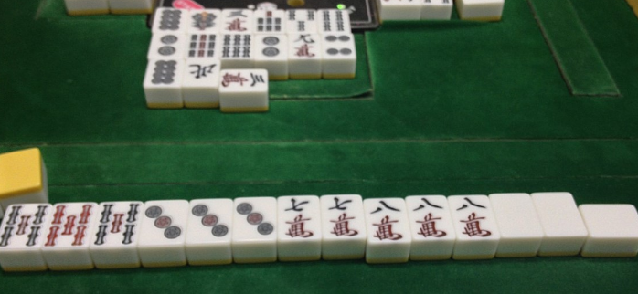
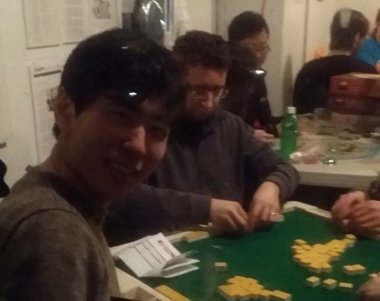

URL = https://www.youtube.com/embed/hEDh2ICvLns
天鳳 기록일지 입니다.
《 天鳳 기록일지 》 -------------------------- 판수: 29 점수: -152.0 평점: -5.24 순위: 4-9-8-8-2.68 (1등횟수-2등횟수-3등횟수-4등횟수-평균순위) -------------------------- 【1】 2位(+9.0) [般南?赤] 牌譜: http://tenhou.net/0/?log=2017100700gm-0009-0000-eaf33bd2&tw=1 【2】 1位(+63.0) [般南?赤] 牌譜: http://tenhou.net/0/?log=2017100700gm-0009-0000-da608e52&tw=0 【3】 2位(+9.0) [般南?赤] 牌譜: http://tenhou.net/0/?log=2017100702gm-0009-0000-4422c129&tw=1 【4】 3位(-30.0) [三般東?赤] 牌譜: http://tenhou.net/0/?log=2017100703gm-0011-0000-20db2a4a&tw=1 【5】 1位(+50.0) [般南?赤] 牌譜: http://tenhou.net/0/?log=2017100703gm-0009-0000-40f6f9b3&tw=3 【6】 2位(+14.0) [般南?赤] 牌譜: http://tenhou.net/0/?log=2017100717gm-0009-0000-3aaf6d2a&tw=1 【7】 4位(-52.0) [般南?赤] 牌譜: http://tenhou.net/0/?log=2017100718gm-0009-0000-2fac5a9c&tw=3 【8】 2位(+11.0) [般南?赤] 牌譜: http://tenhou.net/0/?log=2017100718gm-0009-0000-2f6a5bd9&tw=2 【9】 1位(+50.0) [般南?赤] 牌譜: http://tenhou.net/0/?log=2017100720gm-0009-0000-299c041c&tw=0 【10】 4位(-37.0) [般南?赤] 牌譜: http://tenhou.net/0/?log=2017100721gm-0009-0000-990c7773&tw=3 【11】 4位(-34.0) [般南?赤] 牌譜: http://tenhou.net/0/?log=2017100721gm-0009-0000-fe6b12b8&tw=2 【12】 3位(-19.0) [般南?赤] 牌譜: http://tenhou.net/0/?log=2017100722gm-0009-0000-4fb39903&tw=2 【13】 3位(-41.0) [三般東?赤] 牌譜: http://tenhou.net/0/?log=2017100722gm-0011-0000-3c17710c&tw=0 【14】 2位(0.0) [三般東?赤] 牌譜: http://tenhou.net/0/?log=2017100722gm-0011-0000-f343abdf&tw=0 【15】 2位(-2.0) [三般南?赤] 牌譜: http://tenhou.net/0/?log=2017100814gm-0019-0000-a70ddbb5&tw=0 【16】 3位(-16.0) [般南?赤] 牌譜: http://tenhou.net/0/?log=2017100814gm-0009-0000-59e35edf&tw=1 【17】 3位(-24.0) [般南?赤] 牌譜: http://tenhou.net/0/?log=2017100815gm-0009-0000-ae9e0050&tw=1 【18】 3位(-34.0) [三般東?赤] 牌譜: http://tenhou.net/0/?log=2017100816gm-0011-0000-1a45a8b2&tw=0 【19】 2位(+2.0) [三般南?赤] 牌譜: http://tenhou.net/0/?log=2017100816gm-0019-0000-e7dbe0d1&tw=1 【20】 3位(-61.0) [三般南?赤] 牌譜: http://tenhou.net/0/?log=2017100816gm-0019-0000-57d7f410&tw=1 【21】 2位(+3.0) [三般東?赤] 牌譜: http://tenhou.net/0/?log=2017100816gm-0011-0000-10e4f0d0&tw=2 【22】 3位(-33.0) [三般南?赤] 牌譜: http://tenhou.net/0/?log=2017100816gm-0019-0000-a8cb4b17&tw=1 【23】 3位(-16.0) [般南?赤] 牌譜: http://tenhou.net/0/?log=2017100818gm-0009-0000-36c21824&tw=1 【24】 3位(-18.0) [般南?赤] 牌譜: http://tenhou.net/0/?log=2017100818gm-0009-0000-3fdb2338&tw=3 【25】 2位(+9.0) [般南?赤] 牌譜: http://tenhou.net/0/?log=2017100821gm-0009-0000-206dde5e&tw=1 【26】 1位(+77.0) [般南?赤] 牌譜: http://tenhou.net/0/?log=2017100822gm-0009-0000-5f8f35bd&tw=3 【27】 2位(+3.0) [般南?赤] 牌譜: http://tenhou.net/0/?log=2017100822gm-0009-0000-2aeb2a79&tw=1 【28】 3位(-17.0) [般南?赤] 牌譜: http://tenhou.net/0/?log=2017100823gm-0009-0000-45e4ac1c&tw=1 【29】 3位(-18.0) [般南?赤] 牌譜: http://tenhou.net/0/?log=2017100916gm-0009-0000-ec40c8f3&tw=1 --------------------------
Updated in 2017-10-09 20:09
<오프라인 역만>
<마작 in NewYork>
BGM src : "https://youtu.be/Mg1M5_V5v_8" ☎ : 010-2781-8889 email : insg1993@naver.comTop